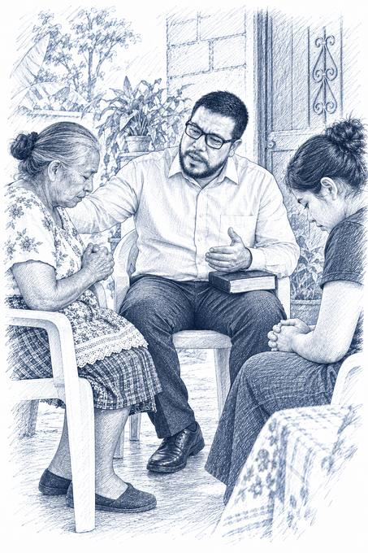
1El ministerio pastoral
Amo esta tarea y creo que será lo último que haga en mi vida.
Sábado 12 de diciembre de 2026
powered by Tecnoia.gt
Estrategias pastorales para iglesias locales
Crecer integralmente no es llenar bancas.
Es verdad que las iglesias pentecostales de Guatemala se han distinguido por su crecimiento. Sin embargo, en muchas congregaciones locales la historia es otra: liderazgos cansados, templos que se llenan una vez al año, iglesias que, al parecer, han dejado de crecer.
Este libro parte de esa distancia entre lo que se dice y lo que se ve, y la convierte en pregunta: ¿qué estrategias hacen que una iglesia pentecostal local crezca de manera integral? El autor separa aquí dos crecimientos que el discurso eclesial suele confundir, el del número y el de la estatura espiritual. No son lo mismo.
A partir de Hechos 2.41-47 y de una experiencia con una congregación de Gualán, Zacapa, propone cuatro claves. Su mayor acierto, a nuestro juicio, es que no le exige al pastor un programa doctoral ni un presupuesto que no tiene. Le ofrece, al menos, una guía para empezar.
Este nació en congregaciones pequeñas y en templos de lámina del oriente de Guatemala. Esta es la historia detrás del libro.
Baje para recorrer la historiaCrecí en un hogar de extrema pobreza, entre diez hermanos, en una pequeña aldea llamada Los Achiotes, del municipio de Gualán, departamento de Zacapa. Fue un hogar cristiano.
«Así conocí a Dios: en la escuela dominical y en las noches de culto de una pequeña congregación de la Iglesia de Dios.»
Prefacio, p. 1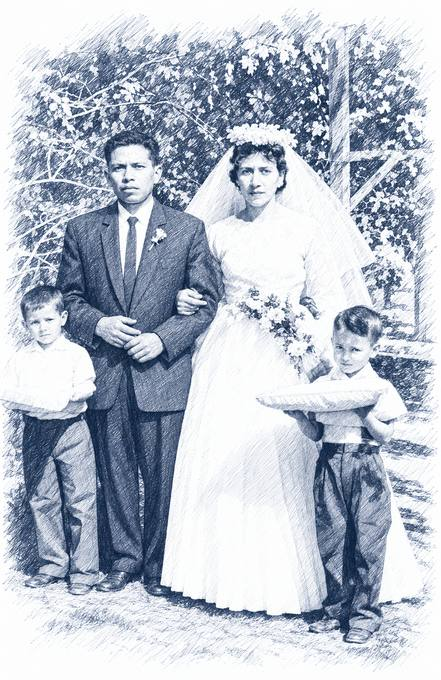
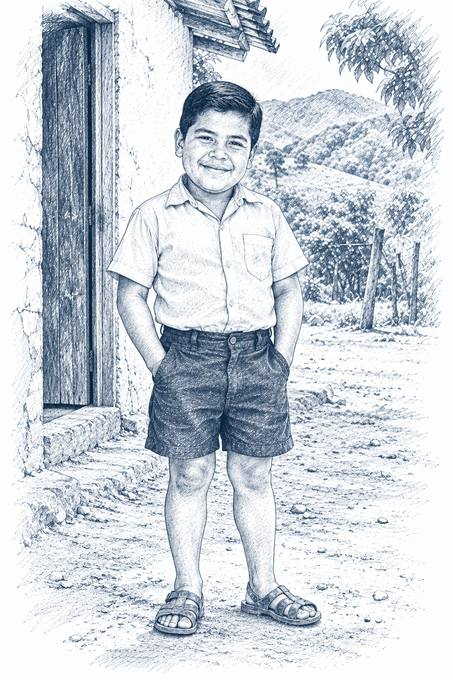
En julio de 1994, cuando cursaba el último año de mi carrera media, hice la promesa de volver a los caminos de Cristo.
Llegó al pueblo una campaña evangelística. «Me revestí de valor y pasé al frente.»
Prefacio, p. 2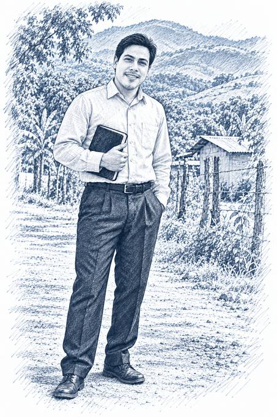
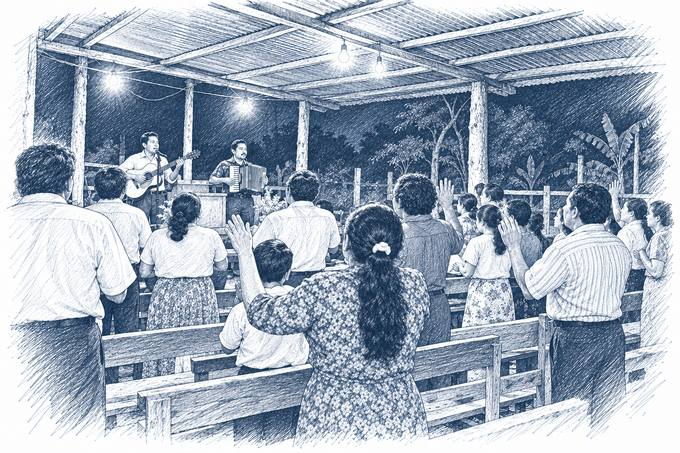
Ocurrió el 6 de abril de 1996, en una vigilia: Dios me sorprendió bautizándome con su Espíritu.
«En octubre de 1996 fui nombrado para pastorear en Mayuelas, una comunidad del mismo municipio de Gualán.» Allí sirvió unos diecisiete años.
Prefacio, p. 2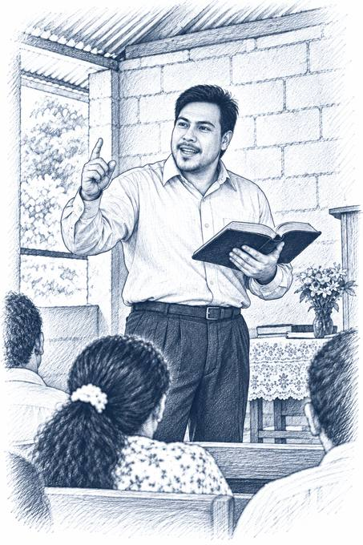
En 1999 tuve la bendición de casarme.
Por entonces obtuvo sus credenciales ministeriales en la Iglesia de Dios e ingresó a la universidad.
Prefacio, p. 2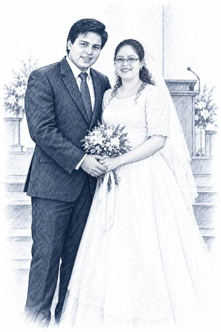
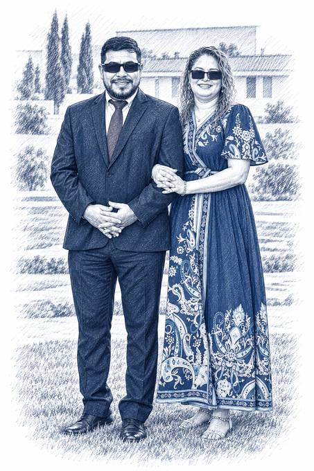
Pastoreaba, trabajaba como ejecutivo de un banco y estudiaba, todo a la vez. Su esposa sufrió una crisis grave de salud; poco antes había partido su madre. Estuvo a punto de renunciar al llamado.
Fue duro y quebrantador; pero Dios no me soltó.Prefacio, p. 2
Con mi esposa logramos fortalecer la escuela dominical y establecer la iglesia infantil.
En 2009 se graduó de la universidad. A finales de 2013 entregó la iglesia de Mayuelas, «que para entonces contaba con unos ochenta y cinco miembros, un templo nuevo y un liderazgo comprometido».
Prefacio, p. 3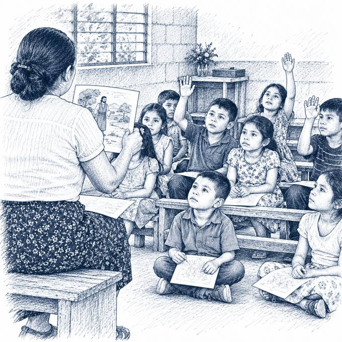
Comenzar de cero nunca es sencillo, pero, junto con mi esposa, mis cuñados y otros familiares, vimos el respaldo de Dios de principio a fin.
Plantó una congregación en el casco urbano de Gualán.
Prefacio, p. 3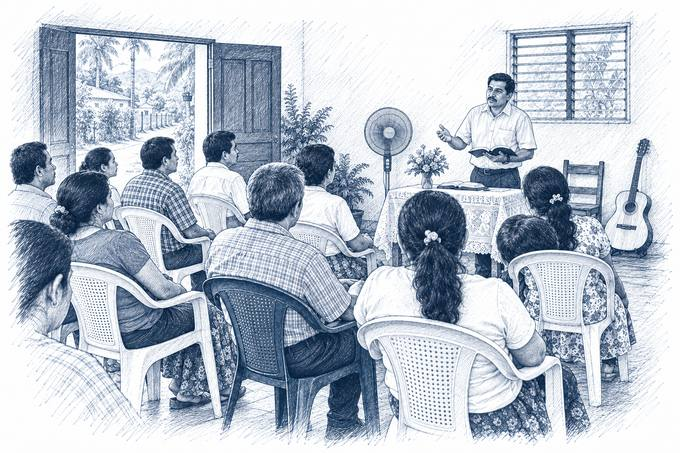
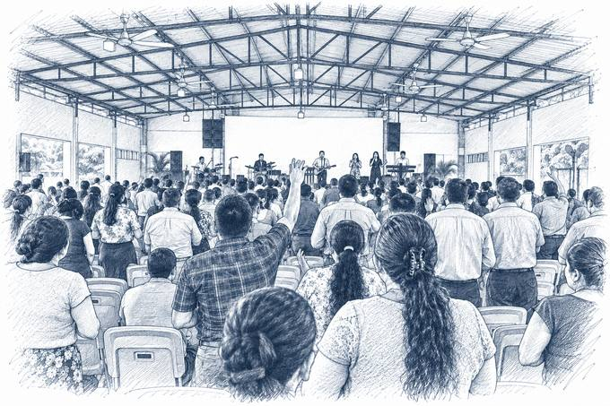
Desde agosto de 2022 sirvo como superintendente nacional de la Iglesia de Dios Evangelio Completo de Guatemala.
Antes fue supervisor del Territorio Noreste (2016) y, a finales de 2020, del Territorio Sur.
Prefacio, p. 3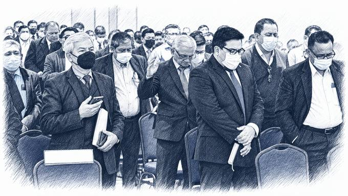
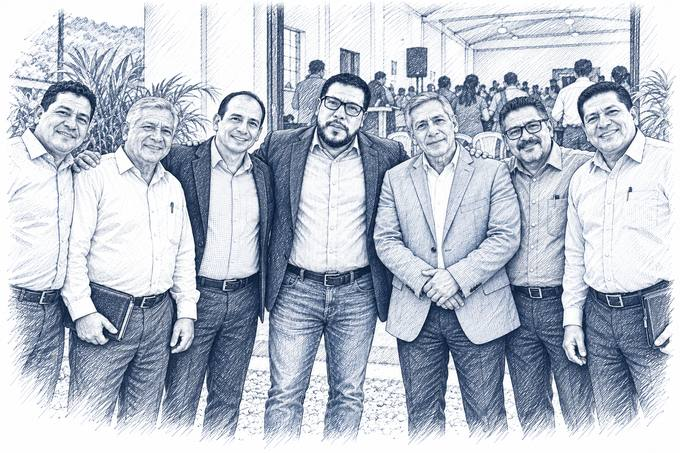
Comprendí que los resultados no podían quedarse guardados: pertenecían a la iglesia.
Cursó el Doctorado en Ministerio del PTS con el SEBIPCA. Entre septiembre y octubre de 2022 llevó las cuatro claves a una congregación de Gualán en talleres con veinte personas: diez líderes y diez miembros.
Prefacio, p. 3; capítulo 3, p. 60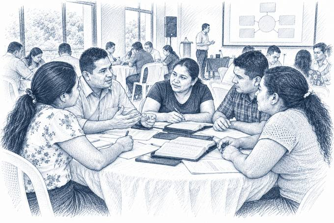
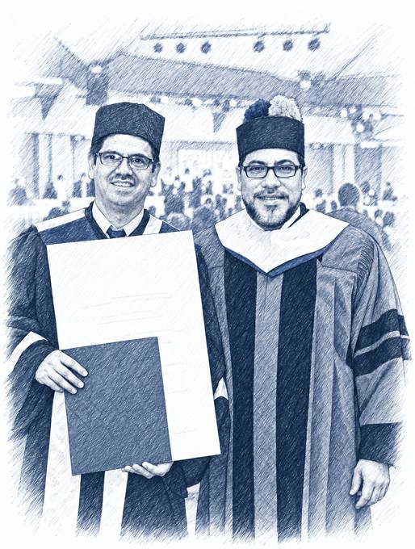

Amo esta tarea y creo que será lo último que haga en mi vida.
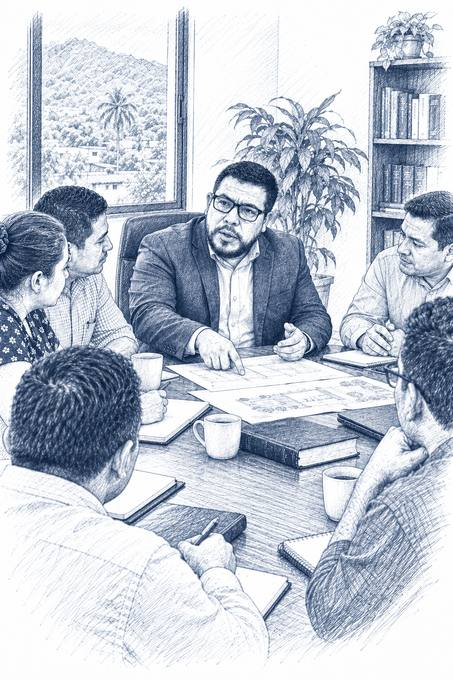
Pastorear y administrar no son funciones opuestas: son dos rostros del mismo cuidado por el pueblo de Dios.
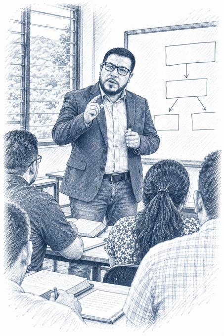
La enseñanza es, para mí, una forma extendida del ministerio pastoral.
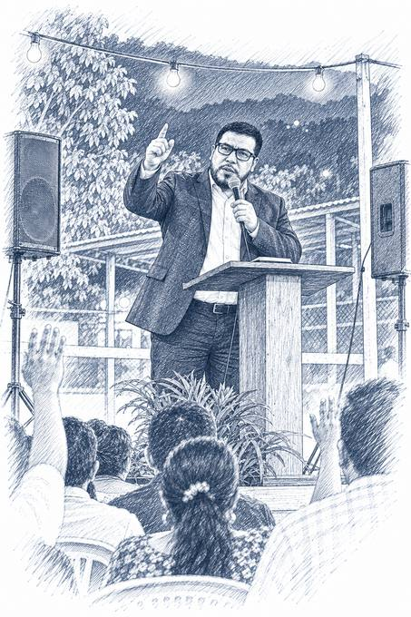
La iglesia que deja de evangelizar deja, en alguna medida, de ser iglesia.
Esa iglesia local, la que reúne a cincuenta, cien o doscientos hermanos, la que se sostiene con ofrendas modestas, la que vela por sus enfermos y entierra a sus muertos, es la iglesia que sostiene al mundo.
Mientras tanto, lea la muestra y comparta esta página con los pastores y líderes de su territorio.
Muestra gratuita para leer y compartir, hasta el 11 de diciembre.
Del 12 al 18 de diciembre de 2026.
Impreso y digital, desde el 19 de diciembre.
Déjenos sus datos y le escribiremos para confirmar su pedido en cuanto el libro esté listo. Las iglesias y los territorios pueden pedir varios ejemplares en una sola solicitud.